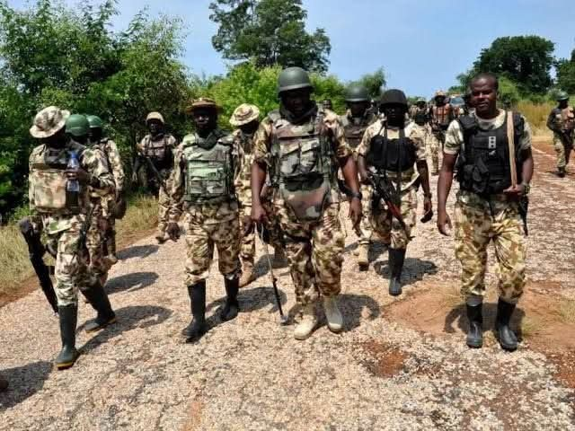

AU accredits Nigeria’s counter-terrorism centre for West Africa

The African Union has accredited Nigeria’s National Counter Terrorism Centre (NCTC) as an African Union Regional Centre of Excellence in Counter Terrorism for West Africa and the Sahel. The designation expands the centre’s role in supporting AU member states through specialised training, joint threat analysis, research, technical assistance and exchanges of lessons learned.
The accreditation was announced on October 27, 2026, at the conclusion of the African Lessons Learned Forum in Abuja. The Acting Director of the African Union Counter Terrorism Centre, Dr Idriss Mounir Lallali, said the recognition followed an assessment of the NCTC’s governance, institutional capacity, training programmes, analytical capabilities, coordination mechanisms and adherence to human rights and the rule of law. The accreditation will initially run for three years and may be renewed.
The process began with a memorandum of understanding between the AU and the NCTC in September 2025. A technical assessment mission in Abuja in December that year produced a roadmap setting out the institutional requirements for accreditation. The NCTC subsequently strengthened its governance structures, training curricula, operational procedures, analytical and coordination functions, and human-rights safeguards.
The centre operates under Nigeria’s Office of the National Security Adviser. Its regional role reflects President Bola Tinubu’s vision, announced at a high-level African counter-terrorism meeting in Abuja in April 2024, to develop the NCTC as a hub for intelligence sharing, operational coordination, training and capacity building.
National Security Adviser Nuhu Ribadu, represented at the event by NCTC National Coordinator Major General Adamu Garba Laka, described the accreditation as both recognition of Nigeria’s progress and a responsibility to contribute further to collective African security. Ribadu said the Federal Government and the Office of the National Security Adviser would support the expanded mandate through staffing, sustainable resources and institutional partnerships, while maintaining compliance with accreditation standards.
Source: Vanguard